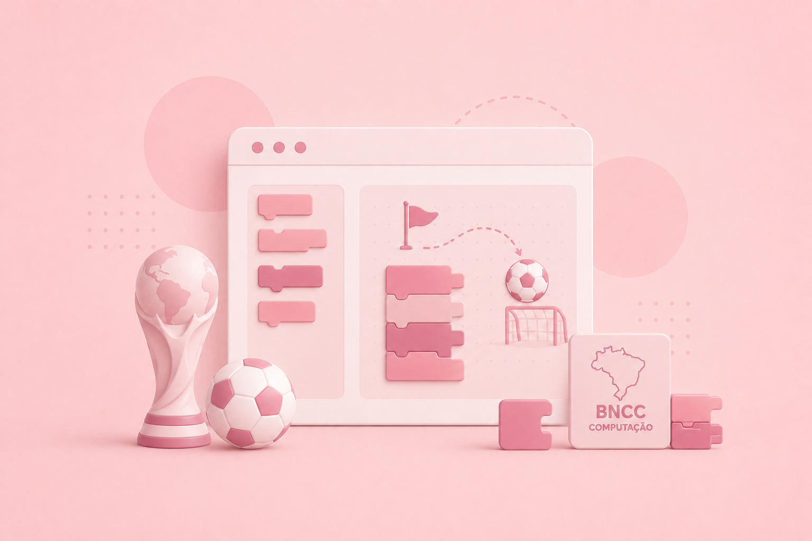
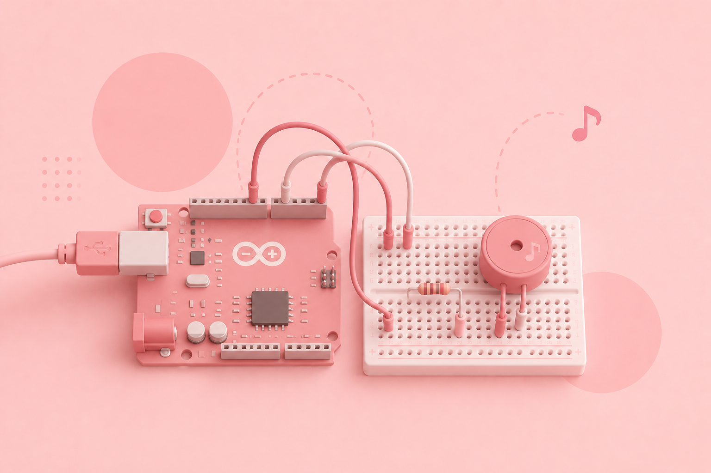

Olá, sou a
Giulliana Cestari!
Sou educadora dedicada ao desenvolvimento de estudantes da educação básica. Minha atuação une duas grandes linguagens universais: a tecnologia (através do pensamento computacional, IAs, robótica e programação) e a música (pelo piano, flauta e musicalização).
Valores dos quais não abro mão
Propósito
Transformar conhecimento em impacto real, carregando intencionalidade, significado e direção.
Amor
Enxergar o estudante em sua totalidade, acolhendo a individualidade de cada um com cuidado.
Excelência
Construir com dedicação e qualidade, cuidando da missão que foi confiada às minhas mãos.
Minhas competências
Minhas "hard skills" reúnem um equilíbrio entre a lógica das ciências de dados e a harmonia da educação musical.
Programação & Robótica
- BNCC de Computação
- Scratch
- HTML & CSS
- SASS
- Bootstrap
- JavaScript
- Python
- GitHub
- Tinkercad
- Arduino Cloud
- MBlock
Prototipação & UX
- Figma
- CorelDraw
- Canva
Música
- Piano erudito
- Flauta doce
- Musicalização Infantil
- Canto Coral
- História da Música
- Percepção & Rítmica
- Estruturação Musical
Gestão de Projetos
- ClickUp
- Slack
- Google Workspace
- Microsoft Office 365
- Notion
Perfil CI
Esta combinação garante que minhas práticas pedagógicas sejam organizadas e estruturadas (Conformidade), ao mesmo tempo que se mantêm envolventes, comunicativas e acolhedoras para o ambiente escolar (Influência).
Atitudes e Habilidades Interpessoais (Soft Skills)
Proativa
Busco antecipar soluções problemas no dia a dia.
Organizada
Gosto de planos de aula bem estruturados.
Comunicativa
Adapto a linguagem da aula à faixa etária do meu aluno.
Eficiente
Procuro soluções para otimizar tempo e recursos.
Analítica
Analiso o contexto para criar aulas mais assertivas.
Escuta Ativa
Foco nas dores e anseios do estudante.
Minha Formação
Base teórica sólida que habilita a intersecção de tecnologia, publicidade e música.
Graduação — Análise e Desenvolvimento de Sistemas
UNICID (Universidade Cidade de São Paulo)
Graduação — Produção Publicitária
UNIGRAN (Centro Universitário da Grande Dourados)
Formação Musical com especialização em Piano
FASCS (Fundação das Artes de São Caetano do Sul)
Iniciação Musical com ênfase em Flautas Doce e Traversal
FASCS (Fundação das Artes de São Caetano do Sul)
Experiência Profissional
Trajetória marcada pelo ensino ativo, instrução de tecnologias e atuações no setor de comunicação.
Start by Alura
Formadora de Docentes (2026 - Presente)
* Elaboração de materiais pedagógicos de apoio ao docente, como
formações assíncronas, guias e manuais de implementação da BNCC de Computação.
* Condução de formações síncronas presenciais para professores da rede estadual
de São
Paulo.
Instrutora de Tecnologias (2025 - Presente)
* Desenvolvimento de unidades curriculares e roteiros pedagógicos. Ensino de
tecnologias educacionais e letramento digital voltados à implementação da BNCC, com
ênfase em IoT, Desenvolvimento Front-End,
Inteligência Artificial, Cultura Digital, e Robótica.
* Elaboração de avaliações formativas e somativas para uso interno e externo em
competições, como
OBI (Olimpíada Brasileira de Informática), Maratona Tech e Agrinho.
* Coautoria em documento curricular do Itinerário Formativo de Aprofundamento
(IFA), com foco nos conteúdos de Programação, desenvolvido para a Secretaria de
Educação do Paraná.
Assistente de Conteúdo (2024 - 2025)
* Produção de materiais didáticos e suporte técnico em
ambientes de aprendizagem
digital.
* Produção de avaliações somativas e formativas relacionadas a unidades
educacionais e
maratonas de âmbito nacional.
Estágio de Conteúdo (2023 - 2024)
Suporte na produção de materiais didáticos e suporte técnico em ambientes de aprendizagem digital.
Sala São Paulo, FASCS, Colégio Singular Júnior, OFESB e AG Music.
Prática de Orquestra (2022 - Presente)
Atuação voluntária como pianista acompanhante da OFESB (Orquestra Filarmônica Evangélica de São Bernardo do Campo).
Apresentações & Música de Câmara (2016 - 2019)
Atuação musical ativa na FASCS e na Sala São Paulo em conjunto com o músico Paulo Paschoal.
Pianista Acompanhante (2016 - 2019)
Atuação na AG Music, participando de eventos corporativos, debutantes e casamentos.
Estagiária em Música (2016 - 2019)
Atuação no Colégio Singular Júnior, desenvolvendo projetos de musicalização, flauta doce e canto coral para Ensino Fundamental.
Aluna de Piano (2007 - 2019)
Professores: Roberta Montanheiro, Cláudia Siste, Ulisses de Castro, Sara Chong.
Ensino Bíblico
Assembléia de Deus Ministério do Belém
Atuação voluntária como professora de estudo bíblico para Educação Infantil.
Analista de Marketing
Telepoint Engenharia Civil e Elétrica
Criação de campanhas de marketing integrado, identidade visual corporativa e gestão de fluxos de comunicação no Google Workspace.
Meus projetos
Clique em "Ver Detalhes" para ler a proposta pedagógica completa, metodologias ativas aplicadas e impacto no aprendizado.
Entre Algoritmos e Aprendizagens: Desafios e possibilidades na avaliação do Pensamento Computacional na Educação Básica
BNCC de Computação
Coautoria em artigo publicado na XI edição do CONEDU (Congresso Nacional de Educação).
Projeto Integrador: Inteligência Artificial e Tecnologias
BNCC de Computação
Coautoria em caderno pedagógico desenvolvido para o Itinerário Formativo de Aprofundamento da rede estadual do Paraná.

Blog - O Verso da Partitura
Computação & História da Música
Projeto interdisciplinar focado no desenvolvimento de um blog responsivo que explora curiosidades sobre a história da música.

Sensores de Vaga PCD
Simulação Eletrônica & Prototipagem
Projeto de robótica voltado ao desenvolvimento de um sensor com foco em acessibilidade e inclusão.

Jogo - Copa do Mundo
Pensamento Computacional
Projeto de lógica de programação que explora funções, listas e reuso de código.

Sinalizadores de Luz e Som
Simulação eletrônica & Teoria Musical
Projeto interdisciplinar de robótica e música voltado à criação de circuitos sonoros e luminosos com Arduino e Tinkercad.